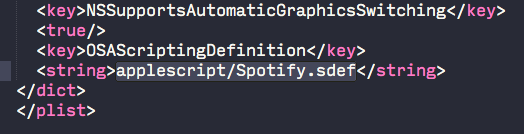

Spotify broke AppleScript support on OS X when they released Spotify version 1.0.1. Crippling apps like Denied, Reign, BarRemote, Spotify Mini Player, Simplify, Bowtie and many more in the process.
This patch fixes the path to the '.sdef' file that OS X needs to enable AppleScript. Check out the source code for more details.
Erm, yea sure.
Right click Spotify in your dock.
Right click Spotify.app and select 'Show Package Contents'.

Go into 'Contents' and open 'Info.plist' in your favorite editor.

Quit Spotify and start it again.
Repeat for every Spotify update (or just use the patcher).